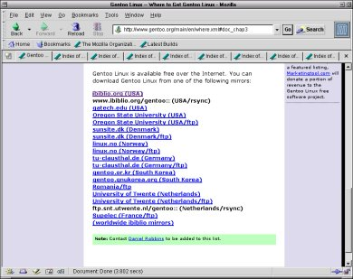
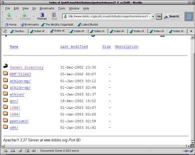

Всем известно, что родина пингвина Дженту –
острова Циркум-Антарктики, места не самые простые для жизни. И не они ли
способствовали тому, что пингвин этот приобрел свои несравненные качества –
быстроту, стойкость, надежность, адаптируемость к любым условиям, стремление к
новому?
Наша отчизна также не может похвастаться
благоприятными природными условиями. Не потому ли Gentoo Linux постепенно
акклиматизируется на наших постсоветских просторах? Правда, пока среди самых
отъявленных, как выразился один из участников форума Linuxshop, пользователей. То есть
тех, кого не пугает не только оболочка bash в роли универсального инсталлятора,
ручная работа с дисковыми разделами и файловыми системами, текстовый редактор
как главный инструмент конфигурирования, но и, в первую очередь, – третья, после
дураков и дорог, извечная беда России – коннект.
Действительно, при полном отсутствии выхода в
Сеть использование Gentoo попросту невозможно, при отсутствии оного на локальной
машине – не эффективно, при отсутствии постоянного подключения – не очень
удобно. По крайней мере, так было до последних дней ушедшего года.
Положение изменилось 2 января 2003 г., когда на
сайте Gentoo было официально
объявлено о выходе второго пре-релиза версии 1.4 (1.4-rc2). Казалось бы – о чем
особенно говорить, даже не окончательная версия. Ан нет, в тот знаменательный
день дистрибутив Gentoo обратился лицом к российскому пользователю и его
собратьям по несчастью, живущим в городах и весях без тотальной интернетизации.
В обоснование этого утверждения предлагаю совершить прогулку по любому из ftp-серверов проекта (рис. 1).

Здесь среди релизов мы легко находим каталог для
версии 1.4-rc2, в котором на текущий момент (Пнд Янв 6 12:11:03 MSK 2003)
содержится три подкаталога для архитектур PowerPC, Sparc и x86. На первых двух
задерживаться не будем. А вот третий каталог содержит варианты дистрибутива для
большинства процессоров Intel-совместимого семейства – абстрактных x86, i586 и
i686, Pentium-III и всех видов Athlon'ов (рис. 2).

Каждый вариант (кроме x86) включает в себя:
- по три тарбалла stage1-3 (каталог stages), из которых разворачиваются
прекомпилированные базовые компоненты системы;
- наиболее используемые приложения, также в прекомпилированном виде (каталог
packages), среди которых – Xfree86, GNOME, KDE, Moxilla, OpenOffice.org;
- так называемый LiveCD (объемом, в зависимости от типа процессора, в
500-650 Мбайт) – совокупность базовых тарбаллов и дополнительных
пакетов.
LiveCD для абстрактной PC-архитектуры (x86) –
совсем крошечный, объемом в 40 Мбайт. Он предназначен для сборки системы «с
нуля», посредством портежей, или для развертывания оной из отдельно скачанных
базовых тарбаллов и бинарных пакетов.
Подчеркнем – все указанное оптимизировано именно
для конкретных процессоров (хотя и не с самыми жесткими флагами). Так что
обладатели моделей, попавших в список, возможно, и не ощутят необходимости в
ручной пересборке полученных на дисках пакетов. Для тех же, «камни» которых еще
не охвачены усилиями разработчиков, остается два выхода. Первый – ждать, пока у
команды Gentoo дойдут до них руки. А по опыту прежних версий можно быть почти
уверенными – дойдут, хотя и не сразу. Второй – выполнить сборку пакетов
самостоятельно. Благо, нынче этот процесс автоматизирован: соответствующие
скрипты, вместе с инструкцией по их применению, можно найти в каталоге
x86/GPR_files. Причем можно в один присест как установить все требуемые пакеты,
так и получить их автономные бинарные варианты, которые можно устанавливать на
другие машины.
Так что теперь у пользователя Gentoo – несколько
возможностей для установки этой системы. Можно, как и в любом пакетном
Linux-дистрибутиве, установить (почти) все необходимое из бинарников. Можно –
установить из прекомпилированных пакетов только базовые компоненты системы, а
все требуемые приложения собирать вручную. Можно – напротив, собрать базовую
систему с нуля, дополнив ее бинарными пакетами. Ну и система портежей,
позволяющая выполнить в любой момент полную пересборку системы со всеми ее
приложениями, от него никуда не делась.
Конечно, прибавление степеней свободы не
избавляет пользователя от необходимости скачивать какие-либо из указанных
образов дисков (или выбранных наборов тарбаллов). Однако это представляется
нынче более простым делом, нежели раньше. И, кроме того, нельзя исключить
возможности приобретения уже готовых дисков. Если не непосредственно от Gentoo
(в наших условиях это было бы несколько затруднительно), то – от какого-либо из
отечественных распространителей этого дистрибутива. А по крайней мере один такой
распространитель уже появился – LinuxShop.
Кого может заинтересовать новый вариант Gentoo
Linux? В первую очередь – тех самых отъявленных пользователей, которые раньше по
объективным причинам были лишены возможности его пользовать (или которым
приходилось преодолевать немалые трудности на этом пути – благо не перевелись
еще на Руси гусары).
Во-вторых – системных администраторов, опекающих
(зоо-) парк разнообразных Intel-совместимых (а может быть – и несовместимых
машин). Ведь они автоматически получают в свое распоряжение варианты
дистрибутива, оптимизированные под изрядную часть процессоров, имеющих хождение
на территории бывшего СССР (как, впрочем, и за его пределами). И плюс –
возможность сборки столь же оптимизированных систем под процессоры, пока не
попавших в официальный список.
В третьих, возможно, к дистрибутиву Gentoo стоит
присмотреться сборщикам компьютеров, подумывающих о предустановке Linux – как
борьбы с пиратством ради, так и сокращения накладных расходов для. В чем они
могут увидеть его преимущество перед пакетными дистрибутивами? Понятно, что
последние собираются, исходя из некоторых усредненных представлений
разработчиков о распространенном железе. В случае же с Gentoo сборщику вольно
самому собирать систему под весь спектр продаваемой им аппаратуры. Каковая,
понятно, способна заиграть всеми своими гранями.
В четвертых, Gentoo – чуть ли не идеальный
объект, на примере которого можно изучать устройство и использование
Unix-систем. Разумеется, не в индивидуальном порядке – я не настолько наивен,
чтобы рекомендовать его для первого знакомства с Linux'ом и Unix'ом вообще. Но в
руках хорошего педагога это был бы прекрасный инструмент познания мощи открытых
и свободных ОС. Почему законное место его видится в сфере образования.
Разумеется, не общего, а специального, то есть – в технических учебных
заведениях с профильным подходом к информационным технологиям.
И, наконец, в пятых, не следует забывать и о
науке. Ведь задачи ее – в принципе не стандартизуемы (если, конечно, это
действительно наука). А адаптируемость Gentoo – непревзойденная, и не только под
аппаратуру.
Конечно, остается скользкий вопрос – о
технической поддержке. Скажем прямо, дистрибутив Gentoo не принадлежит к числу
самых простых в установке и настройке – с первых же шагов от его пользователя
потребуется не только некоторая общая предварительная подготовка, но и подчас
довольно специфические знания. И не останется ли он при этом наедине со своими
проблемами?
Нет, не останется. Конечно, говорить о «горячих
линиях» в стиле Microsoft, или хотя бы об уровне поддержки, обеспечиваемой
разработчиками дистрибутивов Altlinux или ASPLinux, в данном случае не
приходится. Однако в распоряжении пользователя – немало источников
дополнительной информации.
Это, в первую голову, – официальная документация
проекта, постоянно обновляемая и дополняемая. Конечно, она – англоязычна. И
использование ее подчас осложняется тем, что часто это – истинно художественные
(не побоюсь этого слова) произведения, не очень легкие для понимания человека,
привыкшего к стандартному «техническому английскому» (сужу по себе). Однако,
если затратить на нее некоторое время и силы – ручаюсь, можно получить истинное
удовольствие.
Однако этим дело не ограничивается. На сайте Unix4All с некоторого времени
функционирует специальный раздел, посвященный дистрибутиву Gentoo. В нем
размещаются, по мере сил и возможностей, как переводы официальной документации
проекта, так и оригинальные заметки, посвященные различным аспектам установки,
настройки и использования этой системы.
Конечно, отечественное сообщество (я бы даже
сказал – содружество) пользователей Gentoo еще только формируется, и
русскоязычных материалов еще не очень много. Однако надеюсь, что и то
(содружество) и другое (количество материалов) будет расти
параллельно...